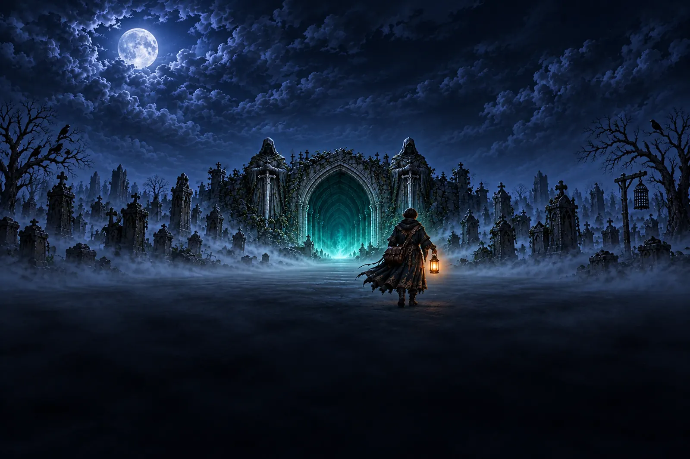

百の迷宮と 魂の王Hundred Labyrinths: Rise of the Soul King
死者の魂を喰らう百の迷宮。生身の人間は還れないその深淵へ、人型の器「人業（ドール）」に死者の魂を宿して挑む。あなたは魂を繰る者、操霊師。
裏向きのカードをめくって迷宮を進み、魂を宿した人業の隊で魔物と戦う、昔ながらの迷宮探索RPGです。全十八章・113の迷宮で、消えた師を捜す物語が完結します。
製品版は準備中です。

株式会社ファンクション・ティのゲーム部門です。 闇と魂をめぐる物語を、ブラウザで遊べるゲームとして届けます。

死者の魂を喰らう百の迷宮。生身の人間は還れないその深淵へ、人型の器「人業（ドール）」に死者の魂を宿して挑む。あなたは魂を繰る者、操霊師。
裏向きのカードをめくって迷宮を進み、魂を宿した人業の隊で魔物と戦う、昔ながらの迷宮探索RPGです。全十八章・113の迷宮で、消えた師を捜す物語が完結します。
製品版は準備中です。